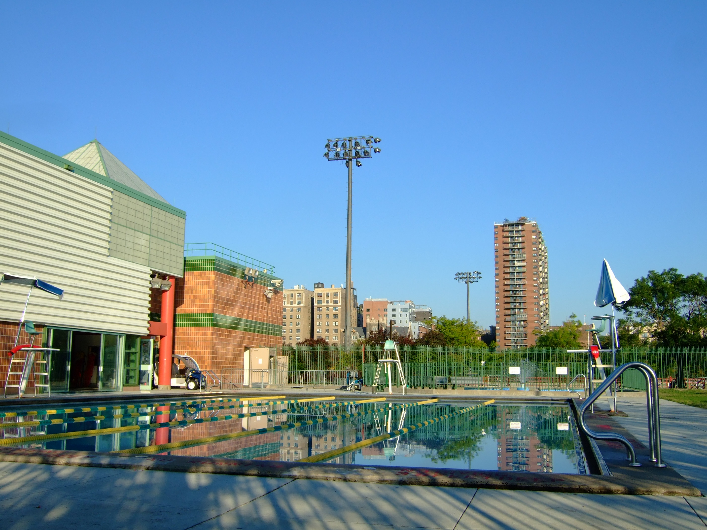
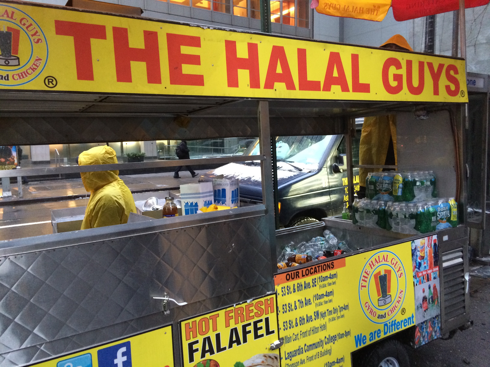

The borough of Manhattan is what many New Yorkers acknowledge as "The City". The borough is split in three informal sections; Upper Manhattan, Midtown Manhattan and Lower Manhattan. Manhattan is known to have been bought by the Dutch in 1626. Manhattan is the only borough that makes up New York County, the second smallest county in the country but one of the most heavily populated ones. Manhattan is home to two of the world's largest stock markets, the New York Stock Exchange and NASDAQ. Manhattan's main attraction is Times Square, located at the heart of the city. Times square is most popular for its bright lights, crowded streets and New Years celebration! Manhattan is also home to various well known museums such as the MET, Museum of Natural history and the MoMA. Central park, located in the middle of Manhattan is also a great attraction. The park has many fun things that anyone can take part in such as going to the Central Park Zoo, sun bathing at sheeps meadow or enjoying the view at bethesda fountain. Looking for something to do in the night time? Manhattan is full of fun bars that host karaoke nights, trivia nights and just an all around good time with good music. Not into the bar scene? The city also offers free outdoor movie nights! Overall, there are numerous places to visit and explore in Manhattan, even those who live in the city can get lost in the culture of this borough! Stop by and see the awesome things this borough has to offer!